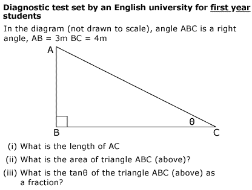
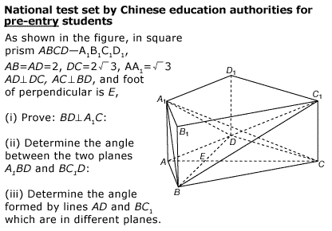

#15358 1 2007-05-25T14:02:33Z Olcadan University story 
My god in the UK, the University exams are easy ass questions. My god i learned this in year 3....... Do UK students need help with there work that much?



While the crazy Japanese are doing actual university work. Doing the hard ass work (lucky me that type of work isn't within my reach.)

That pic screwed me up.

#324156 2 2007-05-25T16:44:08Z Sockmonkey I guess I'm just thick then, being in the UK and all.
But we're learning that stuff in year 9.
#324173 3 2007-05-25T18:38:20Z Kablizzy You didn't learn High-School Trigonometry in year 3. And even on the off-chance that you may have, it's apparent that your schools spend far too much time and far too many resources on maths, and not nearly enough on English.
#324192 4 2007-05-25T19:30:53Z Ad I guess I'm just thick then, being in the UK and all.
But we're learning that stuff in year 9.
QFE
That's balls. I've got a past GCSE paper infront of me with an almost identical question, total three marks, 'tis question two.
I </3 the bollock trotters at the BBC. Take the 4x4 argument for example. A deluxe Range Rover has an emission rating of F, yet a
Mini has a G. Yet when moaning about emissions, they refuse to say 'high emission cars', they have to say '4x4s'.
Grrr. Fuckers.
AND Mr. Olcadan, it says Chinese, not Japanese. Think it's time you put down the maths book, and picked up a geography one. Or just generic reading skills.
#324205 5 2007-05-25T20:33:53Z kamikaze3000 ..hehe, DOSS! im hoping to be a maths student at uni, so i like the look of that.
#324212 6 2007-05-25T20:58:41Z blue_tetris The Chinese may be good at math, but I hear they're not so hot at English.
#324225 7 2007-05-25T22:01:06Z lord_day If you read the article, the English test is taken by people studying sciences at university, some of whom may not have taken maths since they were 16. The test is not meant to be demanding, and is made to ensure that they know the basic maths required. I am willing to bet that it's the easiest question that they might ever be set.
At the same time, the Chinese question is taken by people who have studied until they are 18, and is designed to test their ability at maths. I am also willing to bet that this is one of the harder questions that they may be set.
I don't think you read the article.
#324272 8 2007-05-26T00:46:36Z smartalco on the first question, it is the right triangle that every boy and girl in math is shown, the 3:4:5 ratio is the first triangle you ever learn in algebra (grade 6 for me)
#324273 9 2007-05-26T01:01:44Z usaswim The Chinese may be good at math, but I hear they're not so hot at English.
But they're hot in Chinese!

#324287 10 2007-05-26T02:05:06Z iangb I live in a house full of second-year maths/physics/economics students who would be first in line to argue against you, were they not so busy studying for our exams. Which, for the record, are not exactly what you would call 'easy'.
Oh, and if my first year maths test (for physics) had been anywhere near as easy, I'd have been a lot happier. As it was... let's just say I now have a deep-seated hatred of Fourier series and all related topics.
#324594 11 2007-05-27T10:46:52Z faemir yeh, you learn that in year 9 in the UK. And what's to say that isn't one of the first questions (the stupidly easy ones) in the lower paper.
stop prejudging and believing whatever the media want you to believe.
#324597 12 2007-05-27T10:57:29Z astro By the way, that article isn't the BBC pushing a point, it's about the Royal Society of Chemistry making a competition and a point.
#325183 13 2007-05-29T01:52:16Z usaswim I learned the first one in 5th grade. I learned trigonometry in 6th grade. Do I qualify to go to an English university now?
#325637 14 2007-05-30T08:02:32Z Bloodbath You know what? Fuck you! You say we are stupid because of some question set by governing board, not by the general public i'm sure even if it was bad to put in an easy question like that you can blame the governing board. Go tell them they're stupid, not us. I'm doing that on GCSE maths on my paper on monday and it's intermediate/higher type of question. Yeah so maybe we learn it way before university and it's piss easy but if you hadn't noticed thats not a maths course. Diagnostics or something along the lines clearly only needs basic maths. Why does it need to go into detailed maths if it doesn't need it? I think if you found a proper maths course question it would be blardy difficult. Even if you really disagree with me don't go posting some topic like that on a forum which actually has english members in it and take the piss out of us. You're the one whos fucking stupid!
#325639 15 2007-05-30T08:07:21Z Kablizzy ^QFE. Except without the quoting part. Just FE.
#325640 16 2007-05-30T08:10:33Z LittleViking Haha, man. You'd never make it in America. Growing up as a student in the 90's, people from every country in the world (including people inside the U.S.) have hammered it into our heads that American students are as dumb as it gets. You've probably made that stereotype yourself at some point. Don't feel bad, it's popular to bash America.
By the way, this isn't for students entering into Diagnostics. This is a diagnostic test, meant to diagnose what level of math a student should start at. For example, if a student missed this question, they might be put in a basic maths class. If they got this one but couldn't differentiate, they might start in calculus.
#325643 17 2007-05-30T08:17:19Z Kablizzy QFE ^. Except this time, I might quote it. Like so;
Haha, man. You'd never make it in America. Growing up as a student in the 90's, people from every country in the world (including people inside the U.S.) have hammered it into our heads that American students are as dumb as it gets. You've probably made that stereotype yourself at some point. Don't feel bad, it's popular to bash America.
By the way, this isn't for students entering into Diagnostics. This is a diagnostic test, meant to diagnose what level of math a student should start at. For example, if a student missed this question, they might be put in a basic maths class. If they got this one but couldn't differentiate, they might start in calculus.
Yeah, that suits me well.
#325646 18 2007-05-30T08:36:28Z Bloodbath Well the idea still remains, it's not a full on maths course. That probably was the first or second question on their test.
Meh to that point viking. I'd probably accept it if it came from someone with more than half a brain cell of intelligence but this guy clearly doesn't.
#325648 19 2007-05-30T08:57:40Z LittleViking Erm. You don't think the UK's Royal Society of Chemistry has half a brain cell? Surely, if you totalled up all the fractions of brain cells among the professionals and masters of chemistry in the organization, it would add up to at least one-half. They do claim 43,000 members, after all.
#325657 20 2007-05-30T10:57:50Z Bloodbath I was talking about olcadan.
#326210 21 2007-06-01T11:53:57Z Olcadan You know what? Fuck you! You say we are stupid because of some question set by governing board, not by the general public i'm sure even if it was bad to put in an easy question like that you can blame the governing board. Go tell them they're stupid, not us. I'm doing that on GCSE maths on my paper on monday and it's intermediate/higher type of question. Yeah so maybe we learn it way before university and it's piss easy but if you hadn't noticed thats not a maths course. Diagnostics or something along the lines clearly only needs basic maths. Why does it need to go into detailed maths if it doesn't need it? I think if you found a proper maths course question it would be blardy difficult. Even if you really disagree with me don't go posting some topic like that on a forum which actually has english members in it and take the piss out of us. You're the one whos fucking stupid!
What the?
Shove your head up my ass and see what happens

#326226 22 2007-06-01T13:28:34Z DemonzLunchBreak What the?
Shove your head up my ass and see what happens
What, are you surprised that people from the U.K. get angry when you call them stupid?
e_e
#326272 23 2007-06-01T16:27:40Z usaswim Mmmm... this topic should've never been made in the first place...
#326309 24 2007-06-01T18:41:11Z crappitrash I'm willing to bet that the Chinese question there, is one of the simpler ones in their papers. I've seen Chinese papers for primary school, where they already do Olympiad-standard geometry, and in four years of math education, they cover algebra the first, trigo the second, geometry the third and calculus the fourth. That corresponds to the "secondary" education period in Singapore (I think it's Years 7-10).
Chinese math is insane. It makes GCSE papers look easy.
#326311 25 2007-06-01T18:52:39Z Guest The fact that everyone says "maths" instead of "math" is annoying me more than the actual topic.
"I have my maths class next period." English
"I have my math class next period." American
#326431 26 2007-06-02T01:37:30Z iangb UK= Maths
US = math
It's not a mistake.
#326440 27 2007-06-02T02:14:38Z Guest UK= Maths
US = math
It's not a mistake.
I never said it was a mistake. I realize the "s" is intentional due to the fact that everyone says it. I merely said that it annoyed me.
#326503 28 2007-06-02T08:49:07Z crappitrash Then say "mathematics" each time.
#326560 29 2007-06-02T14:14:06Z iangb I never said it was a mistake. I realize the "s" is intentional due to the fact that everyone says it. I merely said that it annoyed me.
Well, poor old you. I'm sure if you wrote a letter to your local paper complaining about it, the entire country might change their language to accommodate you.
[/sarcasm, in case you didn't realise]
#326568 30 2007-06-02T14:37:30Z Guest Well, poor old you. I'm sure if you wrote a letter to your local paper complaining about it, the entire country might change their language to accommodate you.
[/sarcasm, in case you didn't realise]
/me sighs.
I never said it had to be changed. I never said it was wrong. I merely said that the "s" annoys me, due to the fact that I am not accustomed to seeing it. So before you decide to prance around like an ass next time, please don't read too far into simple statements.
#326582 31 2007-06-02T15:10:57Z iangb ...you could just not make such irrelevant, sweeping and seemingly arrogant statements in the first place. Wouldn't that be easier?
#326594 32 2007-06-02T15:27:34Z Guest The fact that everyone says "maths" instead of "math" is annoying me more than the actual topic.
...
Feelings aren't arrogant...
But I digress. I won't post any more of my feelings. Hell, I just won't post anymore.
#326615 33 2007-06-02T15:56:46Z astro But it's not the mere feeling. It's the fact that you decided to make a post about it in the way you did. Not that it matters. Chill, everyone in this topic. Chill.
#326676 34 2007-06-02T18:59:19Z iangb ...fair.
#327774 35 2007-06-05T21:46:12Z Ad I change my opinion of this topic. Our exams are too easy.
Who else that's just done the Higher Maths Edexcel GCSE NonCalc Paper would care to agree?
One of the questions was 720 - 120 - 90 = ?, for four marks.
OH MY FUCKING GOD.
#327954 36 2007-06-06T07:10:51Z The_Muffin_Man I learned the first 2 questions in 5th or 6th grade...
Except the 3rd question!?!?!?!?!?!?!?!?!?!?!?
What the hell does that mean?